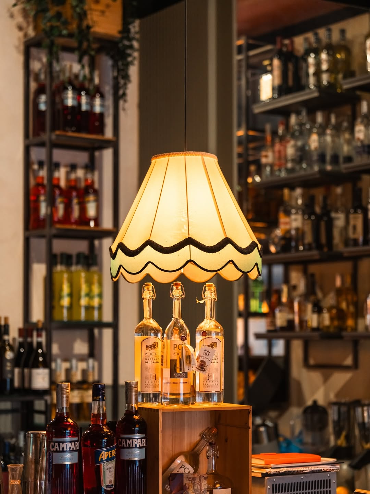
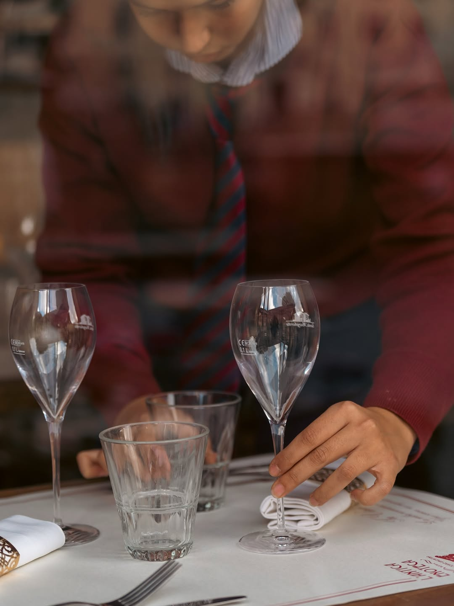
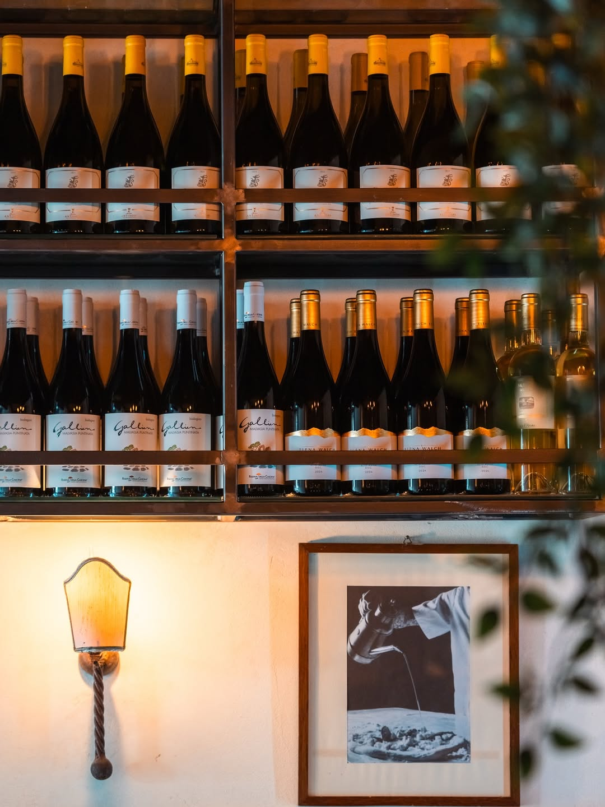
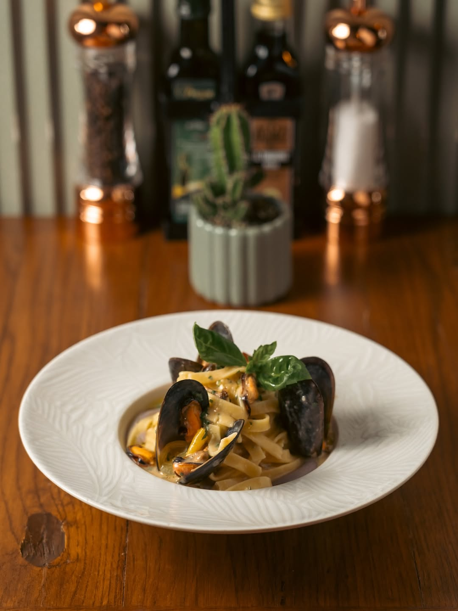
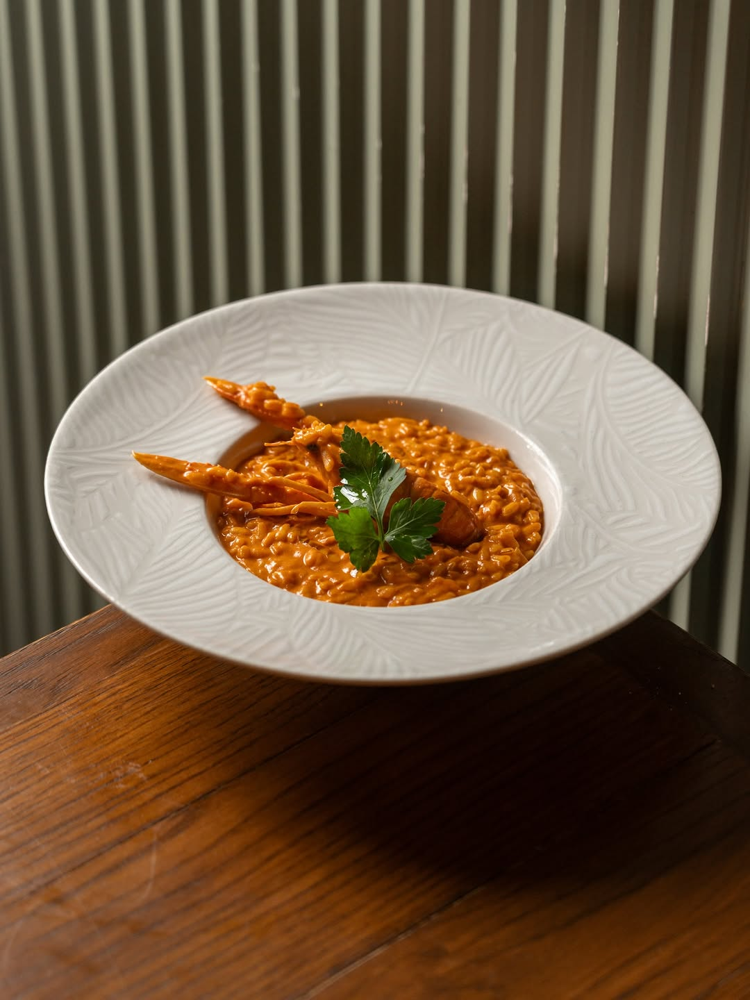
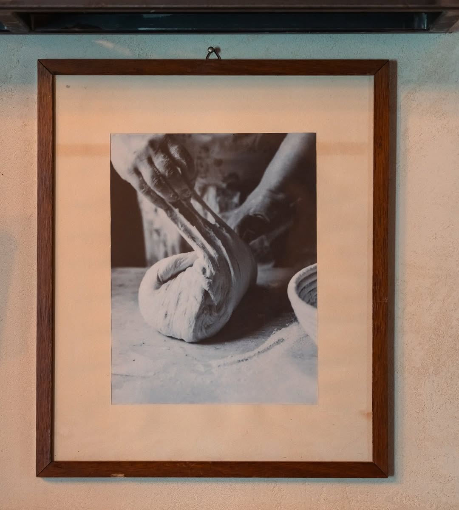

L'aperitivo
Lampadario d'epoca, bar fornito di tutto. Anche di tempo.
Roma — Largo di Torre Argentina
Vino, cucina romana, cocktail.
Dalle sette e mezza fino a mezzanotte, sulla piazza dove cadde Cesare.
In Vino Veritas
Il luogo
Quattro templi repubblicani affondati di sei metri sotto il livello della città. Il punto esatto in cui — secondo Svetonio — Giulio Cesare cadde alle Idi di Marzo, 44 a.C. E una colonia di gatti che da settant'anni vive lì, indisturbata.
A questo angolo di Roma, da generazioni, c'è anche la nostra cantina.



La cantina
Cesanese del Piglio per restare in regione. Sangiovese, Nebbiolo e Barolo per salire. Etna Rosso e Frappato per scendere. La nostra carta dei vini si legge come un viaggio in treno: parte da Roma e arriva ovunque.
Numeri indicativi · richiedi la carta in sala
I piatti
Pochi, fatti bene. La cucina romana tradizionale, senza scorciatoie, pensata per accompagnare il bicchiere giusto.

Pasta fresca, cozze nostrane, vino bianco, basilico.

Mantecato, gambero rosso, prezzemolo.
Colazione 7:30 – 11:30
Antipasti
Primi
Secondi
Dolci e vini
Menù dimostrativo. La carta in sala è soggetta a stagionalità e disponibilità — al posto della nostra selezione, qui andranno i piatti reali.
Il banco
Carbonara da manuale, vino della casa onesto, posizione da cartolina. Quando vengo a Roma è il primo posto su cui mi siedo.
Carta dei vini con personalità: ti sanno consigliare anche se non sai niente. Il saltimbocca vale il viaggio.
Cena fuori, i gatti di Largo Argentina che ti girano intorno, una buona bottiglia. Roma fa così. Tornerò.
Servizio attento senza essere invadente. Il pecorino del tagliere ti fa capire perché vale il prezzo. Prenotare la sera.
Recensioni di esempio. Saranno sostituite con citazioni reali dalle 1.470 recensioni Google.
Curiosità
Largo di Torre Argentina ospita la più grande colonia felina di Roma: circa centocinquanta gatti, accuditi da volontarie da settant'anni. Quando ceni nel dehors, qualcuno potrebbe presentarsi al tavolo.
Non diamo loro da mangiare dalla cucina. Lo fanno già le volontarie.
Sotto i nostri tavoli, sei metri sotto, c'è la Curia di Pompeo. Gli storici dicono che è lì che cadde Cesare.
Prenota
Il dehors si esaurisce in fretta, specie nei weekend. Prenota il tuo tavolo: una telefonata, due minuti, e il posto è tuo.
Dove siamo
Largo di Torre Argentina, lato sud. Sei metri sopra l'area sacra repubblicana.

L'invito
Pranzo, aperitivo o cena. Da soli, in due, in dieci. La porta è aperta dalle undici.